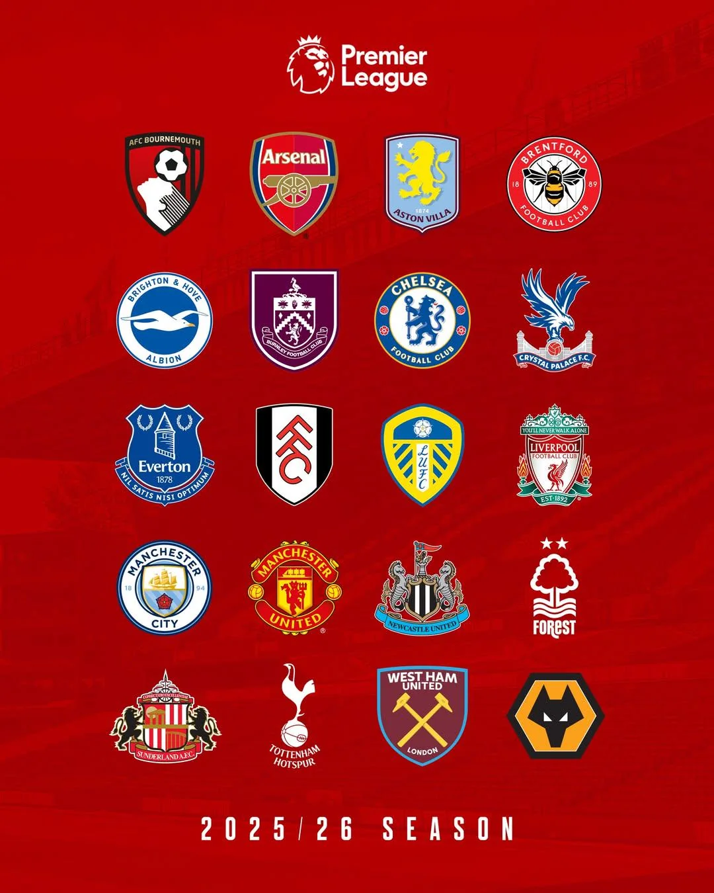
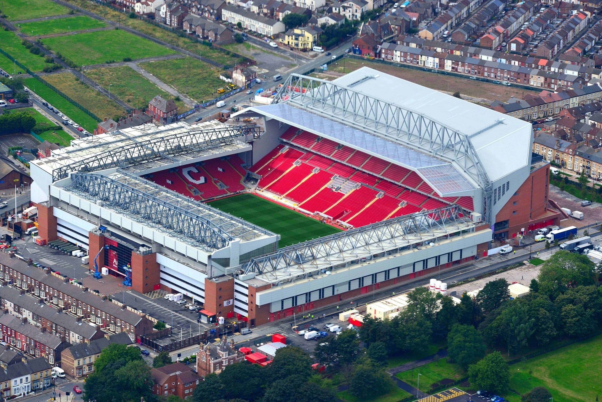

Liverpool, Inglaterra
Madri, Espanha
Paris, França

Olá, meu nome é Andrei Slobodicov, tenho 27 anos e atualmente resido na cidade de São Paulo.
Possuo como interesses livros, séries, filmes, jogos e futebol. Sou fã apaixonado de tudo que envolve Sci-fi e cultura inglesa, desde mídias até futebol!
O hobby que dedico um espaço próprio para comentar sobre é o futebol.
Gosto do esporte como um todo, desde a parte como os clubes administram suas finanças, ações de marketing,
janelas de transferência de jogadores e as estratégias dentro de campo.
A minha competição favorita é o campeonato inglês: conhecido como a Premier League.
Meus hobbies favoritos são:
Segue abaixo uma foto que ilustre o meu hobby favorito: Futebol.
Países (e cidades) que eu gostaria de visitar:
| (Estádio Anfield) Liverpool, Inglaterra |
 |
| (Estádio Santiago Bernabéu) Madri, Espanha |
|
| (Estádio Parc des Princes) Paris, França |
|